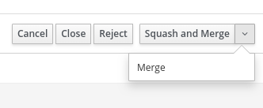
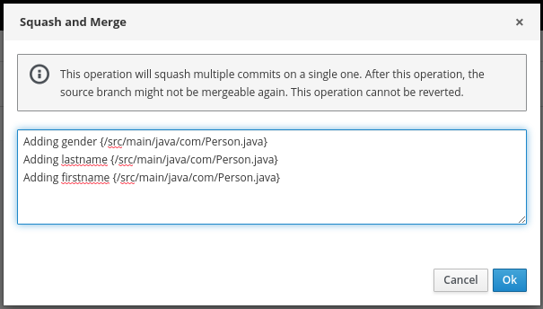
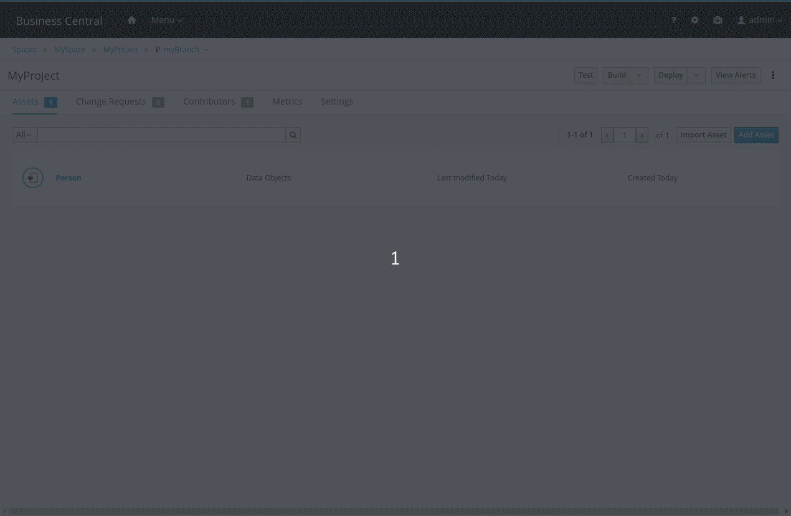

Squash commits when merging a change request
Starting from Business Central v7.33, users can choose to squash commits when merging a change request. Let’s check how it works in this quick post.

Overview
Workspace collaboration via change requests is a recent feature included in Business Central. It allows users to submit their changes for approval from one branch to another, as well as the ability to review the changes prior to the integration. Check out this post to learn more details about this feature.
In order to improve the change request workflow, the ability to squash commits when accepting a change request has been included. Users can now choose to simply merge the commits or squash them all into a single one.
Simply put, the merge operation will join the commits from the source and target branches whereas the squash operation will combine all commits into a single one and merge this commit on top of the target branch. Therefore, the squash operation is indicated when users want to keep clean the target branch, usually the master branch.

Once the user clicks on the Squash and Merge button located in the change request screen, a popup is presented including the messages of all commits that have been done on the source branch. This text is editable, which means that the user can set a personalized message of the squash commit.

Note: As stated by the information message in the popup, the source and target branch might end up in a conflict state after this operation, making it impossible to submit a new change request from the same source branch, unless the conflicts be manually resolved. In practice, it would not be a big deal, since a new branch can be created to merge additional changes.
Demonstration
Suppose we have a Person data object originally created on the master branch and, as a requirement, we need to add some fields to this Person object. Such fields are firstname, lastname, and gender. After the required changes are done in a new branch, a change request is submitted aiming at integrating the changes into the master branch.
Along this process, 3 commits were included in the source branch, which is not interesting to have on the target branch. Thus, the squash operation is done, resulting in a single commit that summarizes all of them on the target branch after the change request is accepted.

And that’s all for today. Thanks for reading! 😃
Squash commits when merging a change request was originally published in kie-tooling on Medium, where people are continuing the conversation by highlighting and responding to this story.